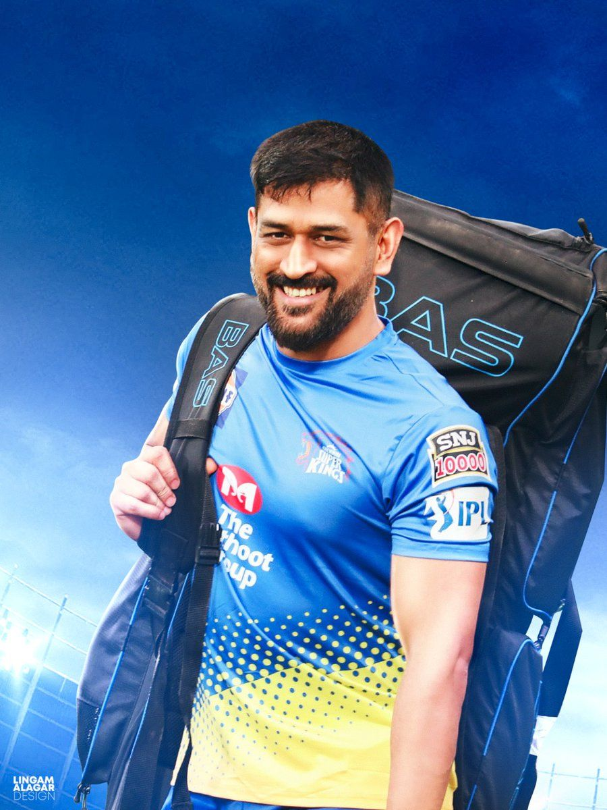

Who is MS Dhoni?
MS Dhoni is a former Indian international cricketer and captain of the Indian national team. He is widely regarded as one of the greatest wicket-keeper batsmen and captains in the history of cricket.
Click the button below to learn more about his achievements.